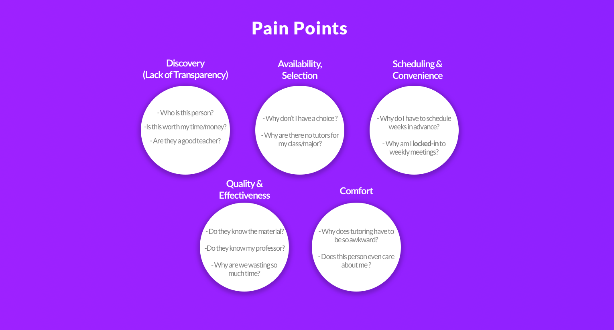

In the closing weeks of my summer at Ironhack’s UX/UI Bootcamp, I was granted the rare opportunity to work on... well, whatever I wanted.
With few rules, little direction, and a hard 2-week deadline, the capstone project would be an opportunity to showcase my talents and demonstrate mastery of everything I’d learned over the course of the bootcamp. And with the freedom to pursue essentially any idea I wanted, I viewed the project as the perfect opportunity to breath new life into an old idea that had been dormant in the back of my mind for years.
The idea? To completely reimagine the way that college students connect with tutors.
The Challenge:
In my Sophomore year of college, after a series of disappointing encounters with my university’s help center, I arrived at the astute conclusion that tutoring sucks, and someone needed to do something about it.
At the time, and with zero research to support my claim, I concluded that scheduling was the main problem, and if only students could request academic help from fellow students on-demand -- like Uber -- then everything else would be just peachy.
After validating the theory with a few of my peers, I arrived at a half-baked “Uber-for-Tutors” concept, lovingly dubbed “Tutoroo” -- and proceeded to do nothing with it.
But after years of gathering dust in the back of my mind, Tutoroo was finally going to have its day.
With the arrival of the UX/UI capstone, I saw my opportunity to finally bring the idea to life. But if I hoped to properly demonstrate everything I’d learned at Ironhack, I would need to revisit the problem, investigate further, and develop a new solution from the ground up.
This is that solution.
RESEARCH
Challenging Assumptions: Insight > Intuition
Before I get into the nuts and bolts of my user research, I feel it’s important to begin with a quick note about my own assumptions.
From the outset of the project, I was quick to recognize how working on old idea of my own conception and designing for an audience of fellow college students would invite the temptation to let my own assumptions improperly influence the design process. Particularly during the research stage, I was wary of the temptation to ask questions that would simply confirm my assumptions, rather than cultivate a deeper understanding of the problem.
To that end, I took measured steps wherever possible to limit the influence of my own beliefs, and to challenge my existing ideas about what the problem was or what a “solution” might look like. I took great care to ensure that insight, rather than intuition, would be the primary driver of my design decisions.
Survey Design: Asking the Right Questions
Seeking fresh perspective on the issue, I conducted a survey to develop a baseline understanding of the students I would be designing for. Targeting current undergraduates at 4-year colleges in the U.S., I developed a set of 10-12 questions probing the students’ current study behaviors and prior experiences with tutoring.
In particular, I sought answers to the following research questions:
1) Under what circumstances do students typically seek individual help with their academics? How often?
2) Where do students look for help when they can’t resolve an academic issue on their own?
3) For students who have used tutors in the past, what (if anything) did they find frustrating about the experience?
4) For students who have never met with a tutor, why not? What changes, if any, would make students more likely to use tutoring services in the future?
With the help of Qualtrics’ boolean logic feature, I chose to ask different questions of survey respondents based on whether or not they had used a tutoring service in the past. This allowed me to develop a more nuanced picture of my target audience, and to anticipate the sorts of problems my design would need to address in order to appeal to the widest possible user base.
Survey Results: What did we learn?
By day 2 of the project, I’d collected 59 total responses from students attending 4-year colleges in the U.S. As intended, the survey results revealed a lot about my target user base, including current behaviors, perceptions of tutoring, and common pain points.
The results also challenged or outright contradicted many of my initial assumptions about the tutoring problem. And in the end, these findings were far more valuable in informing my design process than any notions I had going into the project.
Let’s take a look at some of the most important insights revealed by the survey:
Interview: Methods
The interview sessions afforded me an opportunity to explore the survey results in a more personal context. Without question, the interview sessions produced some of the most valuable insights of the research process.
I conducted 5 interviews with current undergraduate students from a variety of public and private universities in the U.S. I was careful to select participants from a range of small, medium and large universities, so as to capture the most as many unique experiences as possible, and to better understand how users’ needs might vary based on their environment.
By luck, I also discovered that several of my interviewees had worked as tutors in the past, giving me an opportunity to explore the mechanics of tutoring from both sides.
Many of my questions were written to probe participants’ past experiences with studying, tutors or learning in general. In particular, what sorts of circumstances lead students to seek individual help? How do they typically go about finding help? And what does a “successful” experience look like in this context?
By asking the right questions, I was able to refine my understanding of what needs my design would have to meet, and begin to identify opportunities for innovation.
Note: As a current undergraduate myself, I was careful to avoid any references my own tutoring experiences that might inadvertently influence participants' responses.
Interview: What did we learn?
When I sat down to synthesize the findings from my interviews, I found the results were a “mixed bag” that seemed to validate some of my assumptions, but also suggested there was much, much more to the tutoring problem than I had anticipated.
Let’s take a look at the key pain points identified in the interviews:
Pain Point #1: Scheduling & Availability
Scheduling and availability were among the issues most commonly cited by interviewees.
At many schools, I learned, the only way to receive individual attention from a university tutor was to book a recurring appointment at the beginning of the semester, with the precondition that meetings would occur at the same time every week for the remainder of the term.
One interviewee described a system where students would have their tutoring privileges revoked for missing too many sessions. This revelation was especially problematic considering that -- based on the survey data -- most students find themselves seeking help with a given subject “only once or twice,” or “every few weeks.”
Interestingly, these frustrations weren’t limited to the students looking for help. Speaking as a former tutor, one of the interviewees revealed that he had left the job because it was so difficult to work into his schedule.
Clearly, the interviews confirmed my assumption that scheduling and availability were major pain points that would need to be addressed in the final design. But just as the survey results had suggested, the true scope of the tutoring problem was far broader than I could have anticipated based on my experience alone.
Pain Point #2: Quality & Effectiveness
As difficult as it could be just to set up a meeting, many of the interviewees reported feeling disappointed with the quality of the help they ended up receiving.
Interestingly though, I found it difficult to pin down a singular reason for the students’ discontent. And the more I pressed, the clearer it became that an “ineffective” tutoring experience could take many forms.
The most damning stories came from students who discovered that their tutors simply weren’t knowledgeable enough in the material to be any help. Said one interviewee, “My calculus tutor had just returned from a national engineering conference -- but couldn’t show me how to take a derivative? How were you allowed to teach this material in the first place?”
Other complaints focused on the fact that while tutors knew the material, they didn’t understand enough about a specific class structure or a particular professor’s expectations to know what material to focus on. “[My tutor] just didn’t understand how my class worked,” said one student, “so even though he was super fluent in the subject, he wasn’t much help when it came to exams.”
The most common complaint, however, concerned not what the tutors knew -- their mastery of the material -- but their ability to it. “Some people understand it for themselves, but they have trouble communicating it to other people,” said one participant, “Tutoring isn’t for everyone.” That student, who had worked as a tutor in the past, went on to explain that most student tutors were hired based solely upon their performance in past classes, with insufficient emphasis on communication skills.
Pain Point #3: Visibility & The Discovery Process
Next, I took a closer look at the discovery process -- that is, the channels and mechanisms that students were using to connect with tutors. In particular, I set out to understand exactly how discovery fit into the broader tutoring experience, and what existing services were doing to facilitate the process.
And what I found was that tutoring, in its present form, has a massive visibility problem. Regardless of whether students attended a large public university or a small private one, one of the foremost complaints that I heard throughout the interviews was that students felt like they didn’t know what they were getting.
The problem, said students, is that the current process (going through a university representative) provides little to no information about the person you’re meeting, and gives the student no agency in selecting the tutor based on criteria that matter to them.
Asked what they’d like to know about their tutors beforehand, some of the more popular answers included a rating system of some kind -- based on other students' past experiences -- or simply whether the tutor had taken a class with their specific professor before. One student summed it up best in saying “Honestly, I just wanna know I’m not wasting my time.”
Clearly, the most popular channels of discovery had some issues, but the interviews also revealed that their were highly effective alternate modes of discovery.
By far the most positive anecdote came from a student who had discovered his tutor “organically” through the recommendation of a friend. “Even though I didn’t know that much about him beforehand,” he said, “Just hearing that my friend had had a really good experience was enough to convince me that this guy was worth a try. I got his number and we texted back and forth a little bit to set up a time that worked for both of us. Really straightforward.”
Right away, I recognized that “Organic Discovery” had some clear benefits that could be emulated in the design stage.
Pain Point #4: Comfort
While convenience, effectiveness and visibility were significant considerations, I found that perhaps the most profound issue at the heart of the tutoring problem concerned the level of comfort between student and tutor.
Interestingly, this was another area where “organic discovery” prevailed:
“[Finding a tutor through a friend] was better, because the process was a lot more casual. I could just be cool with him, make jokes and it was a lot less serious. You feel a lot more comfortable, which usually prompts you to feel like you can ask more questions. It makes the whole experience better, really.”
Being able to communicate with the tutor before meeting in person was helpful not only for practical issues like exchanging notes and scheduling sessions, but allowed the student to develop a relationship with the tutor before ever meeting.
“Having a connection beforehand really makes a difference,” he said, adding that getting to know his tutor created a more relaxed, productive learning environment than he was used to. “I wouldn’t call him a friend, exactly, but I still text him to say Happy Birthday.”
Although this exchange occurred towards end of the final session, it ended up lending new perspective to everything else I’d heard over the course of the interviews.
Clearly, the real tutoring problem was so much more than inconvenient schedules and limited availability -- it was about the relationship between student and tutor, and creating an environment where students felt comfortable enough to learn.
DEFINE
Reframing the Problem
Reflecting on the research stage, the phrase “drinking from a firehose” felt all too appropriate.
At this point in the project, I was swimming in information and needed to refocus. Making sense of the research began with the construction of an affinity diagram:
After compiling the survey data and key insights from the interview sessions, I was able to extract the most critical challenges that users encountered, and even begin to identify opportunities to address them in the design stage.
The affinity diagram also allowed me to highlight certain “wants” that had emerged during the interviews, as well as key characteristics of what students had described as positive tutoring experiences.
From the research, I was able to identify 5 key pain points:

Next, I used these insights to develop some brainstorming questions that would help focus the design process based on users’ goals and the problems they most commonly encountered in the process of achieving them:
By asking the right questions and leveraging the “how-might-we” convention, I was able to translate the needs and frustrations identified in the research stage into an approximate framework of what the final design would need to accomplish:
IDEATE
Now that I’d developed an understanding of what the design would need to do, the next challenge was figuring out exactly how to do it. In my search for solutions, I found much of my inspiration in one of two places:
First, I revisited my research to learn what I could from students’ successful tutoring experiences. Though much of the research focused on how existing services could be improved, some of the students’ more positive anecdotes were a helpful demonstration of what worked -- and might therefore be emulated in the design stage. The realization concerning “Organic Discovery,” for example, heavily influenced my decision to include features such as profiles, recommendations, and messaging as a means of facilitating a connection between student and tutor.
Second, I looked for inspiration in the design decisions behind successful peer-to-peer service models like Uber, Airbnb and TaskRabbit. Since I was looking to create a similar type of marketplace for skills and services, understanding how existing platforms managed user interactions like scheduling, discovery and payment proved incredibly informative to my own process.
With a little bit of research and some time spent brainstorming, I arrived at the following set of solutions:
PROTOTYPE
Finally the concept was beginning to take shape. With a firm understanding of what the product would need to do -- and a few ideas about how to do it -- I was ready to begin sketching.
Although the service would theoretically require two separate versions of the applications -- one for students and another for tutors -- I recognized that I would need to narrow my focus to one or the other in order to accommodate the two week deadline.
I settled on developing a “proof-of-concept” user flow that would demonstrate the principal functions of the student-facing version.
Let's take a look at some early sketches:
These sample of early sketches focused on the key screens involved in search, discovery and booking.
My biggest challenges at this point concerned how to offer filter/search-by-criteria functionality without making the search process too lengthy and complex. In (2) above, you can see that original search involved a minimum of 3 inputs for subject, availability, and location, with the other filter criteria accessible via a dropdown on screen (4).
Since one of my foremost goals for the project was to humanize the discovery process, however, I wanted the experience to feel less like a search engine and more like a social network. To that end, I decided to restructure the search flow to make the search results (available tutors) accessible with fewer clicks.
Once I’d collected some feedback and had a paper prototype that tested well, I was ready to begin wireframing my refined user flow:
Though I limited the scope of my wireframing to the app's principal user flow, the process helped me further refine the approximate look and layout of my design. The wireframes were also incredibly valuable as a learning tool, as feedback from a second round of testing helped me recognize what aspects of the interface worked well, and what was confusing to users.
Starting with Home page (1), I enlarged the “My Courses” cards and included a preview of how many tutors were available for a given subject. Although users reported that this preview was helpful, the oversized cards seemed to be a wasteful use of screen real estate. I viewed this as an opportunity to revisit the homescreen design and add more functionality in the next iteration.
The wireframes also saw the addition of a large “plus” button to the bottom nav (intended to serve as a “quick schedule” option). Users informed me that this button was ambiguous and fairly redundant, since the search bar served a very similar function. In the next iteration, I decided to remove the quick add button and reconsider the bottom nav iconography for improved clarity.
Though I’d streamlined the search flow in (2) and (3) from three inputs to just one, testing suggested that I had gone too far. Users expressed confusion about the availability of the tutors who appeared in the search results, and I recognized that removing “availability” from the search inputs had likely been a misstep. Thus, in the high-fidelity prototype, the search was modified so that users were prompted to search by subject and availability -- a compromise that allowed users to arrive at their desired results in relatively few clicks.
As with the sketches, the results/profile page (5) emphasized visibility by featuring a bio, ratings, and other key information below the profile picture.
These elements were intended to promote a sense of transparency -- allowing users to “get to know” the available tutors before booking, and thereby play a more active role in the discovery process. The results/profile page also saw the addition of a “favorite” and “recommend to a friend” button, although the placement of these functions was revisited in the high-fidelity prototype.
Visual Design
Before building my high-fidelity prototype, I first needed to develop a style guide that would define the look and feel of my UI:
I wanted to give the app a clean, friendly feel by invoking a visual style reminiscent of popular social networks.
Bold white typefaces and clean, rounded iconography were essential to accomplishing this. I selected VAG Round as the main typeface for its bold yet friendly aesthetic, and because it was unique enough to build recognizable visual brand around.
The use of a largely monochromatic palette in the UI design was also intended to create a strong visual identity, while secondary colors were used to highlight important elements like notifications and form input fields.
Interactive Prototype
With a well-defined visual style and some important lessons-learned from the first two rounds of testing, I was finally ready to build the high-fidelity prototype.
Though I’d limited the scope of my build to a user flow representing the app’s principal functions, I still had some work to do creating the UI for inputs like availability and session date/time.
The most challenging aspect of designing these screens (which were absent from earlier wireframes) was creating an interface that allowed users to accomplish as much as possible on one screen without compromising ease-of-use. The combined date/time picker, for example, allowed me to simplify the appointment request form by eliminating the need for separate inputs.
Though challenging, the result was a simplified flow that allowed users to book sessions quickly and intuitively. After ironing out the kinks with another quick round of testing, I arrived at a “final” hi-fidelity prototype.
Click the embedded prototype below to give Tutoroo a try!
What's Next for Tutoroo?
With just 12 days to build Tutoroo from the ground up -- from conducting research to developing a “minimum viable prototype” -- there were an awful lot of features and ideas that had to be tabled in the interest of time.
In many ways, the project was a tremendous success. Tutoroo took home “Best Overall (UX)” at Ironhack Summer Hackshow, and I later had the opportunity to present the project in Madrid, Spain to an audience of designers and developers.
(read about it here!)
But I couldn’t help but feel that Tutoroo had a long way still to go...
So upon returning for my senior year at the Ohio State University, I knew that I’d been granted a unique opportunity to develop the idea in the place that had inspired it.
With access one of the largest undergraduate student bodies in the nation and a vibrant entrepreneurial ecosystem, there is perhaps no better place to test, iterate, and bring Tutoroo to life. Check back later for updates on development and insights from user testing!